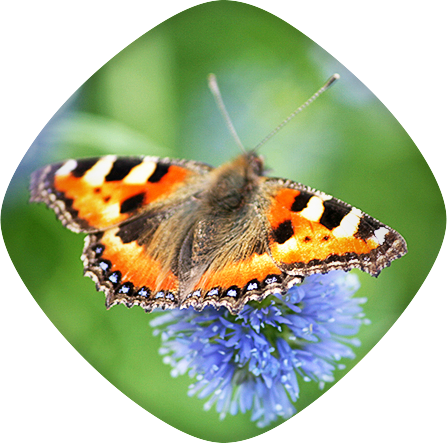

Zonterapi är en behandlingsmetod som har funnits i flera tusen år och bygger på att få igång kroppens självläkning och att öka blodcirkulationen. Zonterapi kan även ha en inflammationsläkande effekt och kan i och med det minska, eller helt ta bort, smärta och värk. Framför allt är zonterapi mycket välgörande vid behandling av kroniska tillstånd och påverkar både utvärtes och invärtes problem. Exempel på när zonterapi kan vara en bra behandlingsform är vid huvudvärk, migrän, förstoppning, allergier, barnlöshet samt matsmältnings- och urinvägsproblem. Andra tillstånd som stress och energisvaghet, men även rygg- och nackproblem, kan också behandlas med zonterapi.
Akupunktur är en kraftfull behandling som innebär att kroppen reagerar lite snabbare än i den vanliga zonterapin. Den kan användas som en egen terapi och leder ofta till en snabb lindring men även, som komplement till zonterapin.
En behandling med zonterapi inkl. akupunktur tar ungefär 1 timme.
Chakraflödesterapi är en energimassage till hela kroppen. Jag är certifierad chakramassör a la Ambres. Behandlingen tar ca en timme.
Pris: 450-650 kr, beroende på behandling och längd mellan 45 minuter och 1,5 timme
